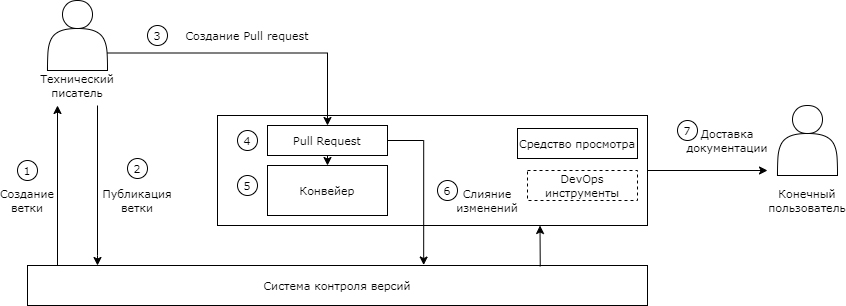

Описание подхода
В жизненном цикле программного продукта документация играет очень важную роль: без нее пользователи (заказчики) испытывают трудности с использованием программного обеспечения (далее – ПО) или, в лучшем случае, не используют весь его потенциал.
Создание всеобъемлющей и легкодоступной документации позволяет избежать этого сценария. Если пользователи могут легко и интуитивно находить нужную им информацию и знать, что она будет полной и понятной, они получат качественную инструкцию и в полной мере воспользуются преимуществами ПО. Однако такая документация требует значительных затрат времени и ресурсов. Часто крупные компании нанимают специалистов, таких как технические писатели, которые полностью посвящают себя созданию и обновлению документации. С другой стороны, в малых/средних компаниях, которые не могут позволить себе такие инвестиции, написание документации является одной из задач команды разработчиков. В большинстве случаев разработчики предпочитают сосредоточиться на своей основной деятельности по разработке ПО, а не на написании и обновлении документации. Это также связано с тем, что инструменты, используемые для написания, сильно отличаются от тех, которые разработчики обычно используют в своей повседневной деятельности.
Для того чтобы удовлетворить потребности разработчиков, а также оптимизировать работу опытных технических писателей приходит на помощь подход «Документация как Код».
«Документация как Код» (с англ. Documentation as Code) – это концепция разработки документации, основная идея которой заключается в разработке технической документации посредством таких же методик и инструментов, как и в процессе разработки исходного кода программного обеспечения.
Концепция «Документация как Код» появилась не так давно глобальным сообществом людей, которым небезразлична документация. Основной и, пожалуй, единственный публичный информационный портал в виде веб-страницы, который содержит основную информацию данного подхода и применяемых в работе инструментов. В отечественной ИТ-индустрии одним из наиболее известных примеров, кто применяет подход «Документация как Код» является компания Яндекс, которая также разработала свою открытую платформу для работы с документацией.
С применением подхода «Документация как Код» можно разрабатывать документы различного формата, например: от внутренних инструкций до документов, к которым предъявляются требования государственных заказчиков: формат docx и отечественные ГОСТы, в рамках организации АО «Институт навигации».
Как и в любом подходе, «Документация как Код» имеет свои плюсы и минусы. Некоторые из них носят ситуативный характер. К достоинствам можно отнести: повторное использование как программного обеспечения, так и человеческих ресурсов либо тесный контакт с разработчиками; оптимизация процесса документирования.
К существенным недостаткам подхода относится: повышение порога технических навыков для специалистов. Существует большое количество инструментов, которые требуют определенный порог вхождения.
При разработке технической документации с применением подхода «Документация как Код» используются следующие технологии:
- Облегченный языка разметки (англ. lightweight markup language)
Документация пишется на языке разметки, одни из самых популярных языков – это Markdown, reSructuredText.
Markdown — более простой язык разметки, но и более ограниченный в плане форматов, в которые он может быть конвертирован без дополнительных преобразований.
reStructuredText — более мощный язык разметки, но и более капризный. В нём сложнее писать и проще допустить ошибку в синтаксисе.
Обычно облегченные языки разметки используются для записи команд машин, таких как файлы конфигурации. Но мы будем использовать данный функционал для разработки документации, что необходимо для базового форматирования текста.
- Системы контроля версий в сочетании с удаленным хостом контроля версий, таким как GitHub или GitLab.
Еще один фундаментальный аспект подхода «Документация как Код» является управления версиями документации: важно отслеживать все изменения, зная, кем и когда они были сделаны. Некоторые из самых популярных и бесплатных систем контроля версий включают Git, Mercurial и Subversion.
Система Git более распространенная благодаря своей относительной простате и имеет открытый исходный код. Самые известные и используемые в мире платформы, а именно GitHub и GitLab, основаны на Git.
Еще одним большим преимуществом, предлагаемым этими инструментами, является возможность асинхронной работы нескольких человек над одним и тем же файлом. Благодаря ветвям любой может создать версию файлов на своем устройстве, внести изменения, а затем создать запрос на извлечение/слияние для внедрения изменений. Все это без прямого влияния на исходный файл или других людей, работающих над другими версиями того же файла. Платформы также предоставляют интерфейс для легкого сообщения о конфликтах и их разрешения (например, два разных, конкурирующих изменения в одном и том же разделе файла).
-
Шаблоны документов, выполненные в редакторах Microsoft Office Word, необходимы для окончательных версий, разработанных в соответствии с ГОСТ.
-
Система публикации (сборки) документации в нужный формат.
После того, как документация написана, версионирована и сохранена, она готова к публикации (сборки в нужный формат). Есть несколько способов опубликовать (собрать) файлы в формате простого текста, который уже имеет базовое форматирование:
- создание статических веб-страниц с помощью генератора статических сайтов, таких как Sphinx и MkDocs, в зависимости от выбранного языка разметки;
-
сборка финального файла в форматы: docx, pdf и т.д.
-
Средства автоматизированного развертывания документации.
Дополнительным преимуществом подхода «Документация как Код» является возможность использовать автоматизацию, которая обычно реализуется для исходного кода: в частности, благодаря этому подходу можно внедрить типичные элементы методологии DevOps, такие как практики CI/CD (Continuous Integration, Continuous Delivery — непрерывная интеграция и доставка).
На приведенном рисунке показан рабочий процесс создания документации, в котором используется подход «Документация как Код».

Порядок действий при создании документации:
- Создается локальная ветка для своих изменений документации.
- Публикуется ветка в системе контроля версий.
- Создается pull request (это заявка на слияние документа из разных веток).
- После уведомления о поступившем pull request документация проверяется ответственными лицами и принимается решение одобрить или отклонить изменения.
- После слияния документа автоматический конвейер выполняет различные проверки документации.
- В случае, если pull request одобрен, содержимое можно объединять с основной веткой.
- Далее, документация доставляется по различным источникам – это может быть формирование документа в различных форматах или обновление страниц, созданных при помощи генератора статических сайтов.